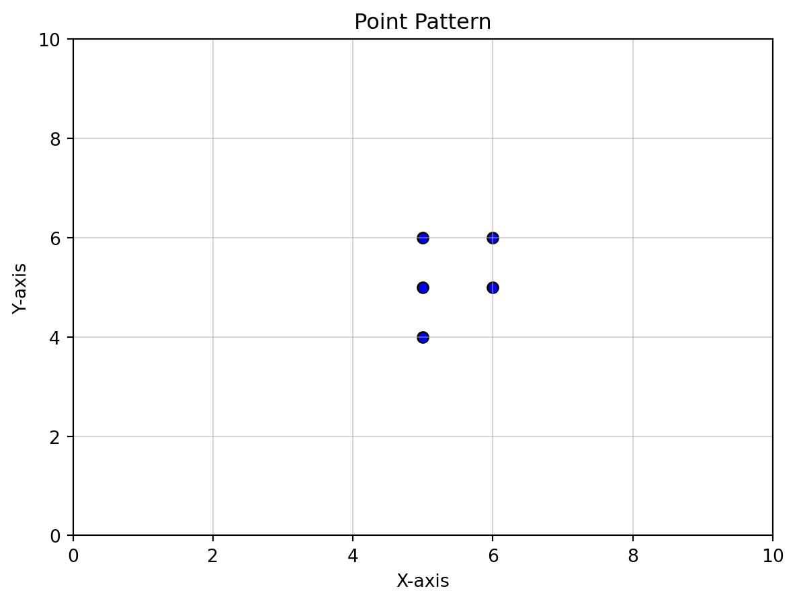

import numpy as npNearest Neighbor Tests
This notebook is an exploration of the Clark-Evans nearest neighbor statistic, a measure in spatial statistics used to evaluate the spatial arrangement of points in a region. The Clark-Evans statistic compares the observed mean nearest neighbor distance with the expected mean distance under the assumption of complete spatial randomness (CSR), allowing us to infer whether a point pattern is clustered, dispersed, or random.
Through analytical and simulation-based approaches, this notebook demonstrates how to compute and interpret the Clark-Evans statistic, and assesses the statistical significance of observed spatial patterns.
Overview of Sections
Point Pattern Setup and Visualization
Introduces the dataset used for analysis, creates a scatter plot to visualize the point pattern, and outlines the computation of basic spatial metrics.Clark-Evans Statistic
- Definition and Interpretation: Explains the formula for the Clark-Evans statistic and its interpretation based on the values of \(R\).
- Observed Mean Nearest Neighbor Distance: Computes the observed nearest neighbor distance, \(\bar{r}_o\), from the data.
- Expected Mean Nearest Neighbor Distance: Derives the expected distance, \(\bar{r}_E\), under CSR.
- Computation of \(R\): Combines observed and expected values to calculate \(R\), interpreting the result.
- Definition and Interpretation: Explains the formula for the Clark-Evans statistic and its interpretation based on the values of \(R\).
Analytical Inference
Discusses the analytical approach to statistical significance testing, using a standard normal distribution and computing the \(z\)-score and \(p\)-value.Simulation Inference
Simulates multiple random point patterns to build a reference distribution for the Clark-Evans statistic and computes a pseudo-\(p\)-value for clustering.Directional and Non-Directional Hypotheses
Considers the implications of testing for clustering versus dispersion and the allocation of significance levels in one-tailed and two-tailed tests.
This structured approach offers a comprehensive understanding of spatial point pattern analysis, equipping users with theoretical insights and practical implementation techniques.
Data
We will create an artificial point pattern for purposes of illustration. The coordinates here are in Euclidean space, so no projection is needed. Keep in mind that you should first ensure your own data is projected if the CRS is unprojected before carrying out the analysis.
import pandas as pdx = [5,5,6,6,5]
y = [5,6,5,6,4]df = pd.DataFrame(data=np.array([x,y]).T, columns=['x','y'])df| x | y | |
|---|---|---|
| 0 | 5 | 5 |
| 1 | 5 | 6 |
| 2 | 6 | 5 |
| 3 | 6 | 6 |
| 4 | 5 | 4 |
import matplotlib.pyplot as plt
# Scatter plot
plt.scatter(df['x'], df['y'], color='blue', edgecolor='black')
# Set x and y limits
plt.xlim(0, 10) # Set x-axis range
plt.ylim(0, 10) # Set y-axis range
# Add labels and title
plt.xlabel('X-axis')
plt.ylabel('Y-axis')
plt.title('Point Pattern')
# Show plot
plt.grid(alpha=0.5)
plt.show()
n = df.shape[0]
n5Clark Evans Statistic
\[R = \bar{r}_O / \bar{r}_E\] where \(\bar{r}_O\) is the observed mean nearest neighbor distance in the point pattern, and \(\bar{r}_E\) is the expected mean nearest neighbor distance under the assumtion of a Homogeneous Poisson Point Process (HPPP)
Interpretation
- \(R < 1\): points in the pattern are closer to their nearest neighbor than can be expected under a HPPP (Clustering).
- \(R > 1\): points in the pattern are more distant from their nearest neighbor than can be expected under a HPPP (Dispersion)
- \(R \approx 1\): points separation from their nearest neighbor is as expected under a HPPP.
Observed mean nearest neighbor distance: \(\bar{r}_o\)
from scipy.spatial.distance import cdist
# Extract coordinates as a NumPy array
coordinates = df[['x', 'y']].values
# Calculate the Euclidean distance matrix
distance_matrix = cdist(coordinates, coordinates, metric='euclidean')
# Convert to a DataFrame for better readability
distance_matrix_df = pd.DataFrame(distance_matrix, columns=df.index, index=df.index)
print(distance_matrix_df)
distance = df.x - df.x.T 0 1 2 3 4
0 0.000000 1.000000 1.000000 1.414214 1.000000
1 1.000000 0.000000 1.414214 1.000000 2.000000
2 1.000000 1.414214 0.000000 1.000000 1.414214
3 1.414214 1.000000 1.000000 0.000000 2.236068
4 1.000000 2.000000 1.414214 2.236068 0.000000The nearest neighbor distance for each point is the minimum non-zero value in each row of the distance matrix.
# Get the minimum distance greater than zero for each row
min_distances = distance_matrix_df.apply(lambda row: row[row > 0].min(), axis=1)
print(min_distances)0 1.0
1 1.0
2 1.0
3 1.0
4 1.0
dtype: float64observed_r = min_distances.mean()
observed_rnp.float64(1.0)The observed mean nearest neighbor distance is \(\bar{r}_o = 1\).
Expected mean nearest neighbor distance: \(\bar{r}_E\)
The expected mean nearest neighbor distance statistic has the following form under CSR:
\[ \bar{r}_E = \frac{1}{2 * \sqrt{\lambda}} \]
where \(\lambda\) is the intensity of the point process:
\[ \lambda = \frac{n}{|W|} \]
where \(n\) is the number of points and \(|W|\) is the area of our window. For the window, there are multiple options. Since this data was created by the instructor, the window is known and corresponds to sampling from the range of 0-10 in both the x and y dimensions.
When the window is not available, one could use the minimum bounding rectangle, or convex hull, to get the area of the window given the point coordinates.
In our sample point pattern we have:
- \(n=5\)
- \(|W| = 10 \times 10 = 100\)
This means \(\lambda = 5 / 100 = 0.05\).
observed_r = min_distances.mean()
observed_rnp.float64(1.0)lam = 5 / 100
lam0.05expected_r = 1 / (
2*
np.sqrt(lam))expected_rnp.float64(2.23606797749979)R = observed_r / expected_r
Rnp.float64(0.4472135954999579)Our statistic is less than one, which points towards clustering. Intuitively, this is because the observed mean nearest neighbor distance is smaller than what we would expect under the null.
We are left with the question of whether the difference between our observed value and expectation is larger (in absolute value) than what could be due to random chance.
This is a question about inference, and we will develop two approaches to answer our question
- Analytical Inference
- Simulation Inference
Analytical Inference
In large enough samples, we can rely on the standardized statistic:
\[ z= (\bar{r}_o - \bar{r}_E ) / \sigma_{r_{E}} \]
which as a standard normal distribution: \(z^{\sim}N(0,1)\).
The standard error of the expected mean nearest distance is:
\[ \sigma_{r_{E}} = \frac{0.26136}{\sqrt{n \times \lambda}} \]
sig_r = 0.26136 / (np.sqrt(n * lam))sig_rnp.float64(0.52272)z = (observed_r - expected_r) / sig_r
znp.float64(-2.3646846830038832)from scipy.stats import normp_value = norm.sf(abs(z
)) # Survival function (1 - CDF)p_valuenp.float64(0.009022713781885967)Simulation Inference
Now, since our observed mean nearest neighbor statistic was less than the expected value, we want to determine how likely it is to get a value as small as the one we did if the true point process was CSR?
To get at this, we are going to simulate a large number of sample point patterns from a known CSR process. For each one of these, we will calculate the mean nearest neighbor statistic and retain all such values.
We then count how many of the mean nearest neighbor statistics from these random point patterns were as small as the one we observed for our point pattern.
Let that number be called smaller.
With smaller in hand, we can calculate a psuedo p-value:
\[ p_{sim} = (smaller + 1) / (99 + 1) \]
where 99, is the number of random point patterns we simulate from a CSR process.
def mean_nnd(x, y
):
df = pd.DataFrame(data=np.array([x,y]).T, columns=['x','y'])
coordinates = df[['x', 'y']].values
# Calculate the Euclidean distance matrix
distance_matrix = cdist(coordinates, coordinates, metric='euclidean')
# Convert to a DataFrame for better readability
distance_matrix_df = pd.DataFrame(distance_matrix, columns=df.index, index=df.index)
distance = df.x - df.x.T
min_distances = distance_matrix_df.apply(lambda row: row[row > 0].min(), axis=1)
return min_distances.mean()x[5, 5, 6, 6, 5]y[5, 6, 5, 6, 4]mean_nnd(x, y)np.float64(1.0)np.random.seed(12345)
n_realizations = 99
mean_nnd(np.random.randint(0, 10, 5), np.random.randint(0, 10, 5))np.float64(3.3682905663705123)nrr = np.random.randint(0, 10, 5)
mean_nnd(nrr, nrr)np.float64(2.262741699796952)xr = np.random.randint(0, 10, 5)
yr = np.random.randint(0, 10, 5)mean_nnd(xr, yr)np.float64(2.982237931008882)nrr = np.random.randintxr = nrr(0, 10, 5)
yr = nrr(0, 10, 5)mean_nnd(xr, yr)np.float64(2.801753402449028)rs = np.array([ mean_nnd(nrr(0, 10, 5), nrr(0, 10, 5)) for i in range(99)])
smaller = (rs <= observed_r).sum()smallernp.int64(0)p_sim = (smaller + 1) / (100)p_simnp.float64(0.01)Note that we were testing for a departure from the null in one direction, clustering. In this case we allocated all of our significance level, \(\alpha=0.05\) into the lower tail of our reference distribution to determine the significance of our observed mean nearest neighbor statistic.
If we were testing against a non-directional null (i.e., we are looking for departures from the null in either direction), we would have split the signficance equally into both tails of our reference distribution.
Two versus One-tailed Tests
Note that we were testing for a departure from the null in one direction, clustering. In this case we allocated all of our significance level, into the lower tail of our reference distribution to determine the significance of our observed mean nearest neighbor statistic.
If we were testing against a non-directional null (i.e., we are looking for departures from the null in either direction), we would have split the signficance equally into both tails of our reference distribution.
| Test Type | \(H_1\) Direction | Significance Allocation | Critical Region(s) |
|---|---|---|---|
| Two-tailed | \(R \ne R_0\) | \(\alpha/2\) in each tail | Both tails (\(\pm z_{\alpha/2}\)) |
| One-tailed | \(R > R_0\) or \(R< R_0\) | \(\alpha\) in one tail | Single Tail (\(z_{\alpha}\) or \(-z_{\alpha}\)) |
Why allocate differently?
To ensure:
- The probability of a Type I error (false positive) matches the specified \(\alpha\).
- The critical values align with the direction and scope of the hypothesis.